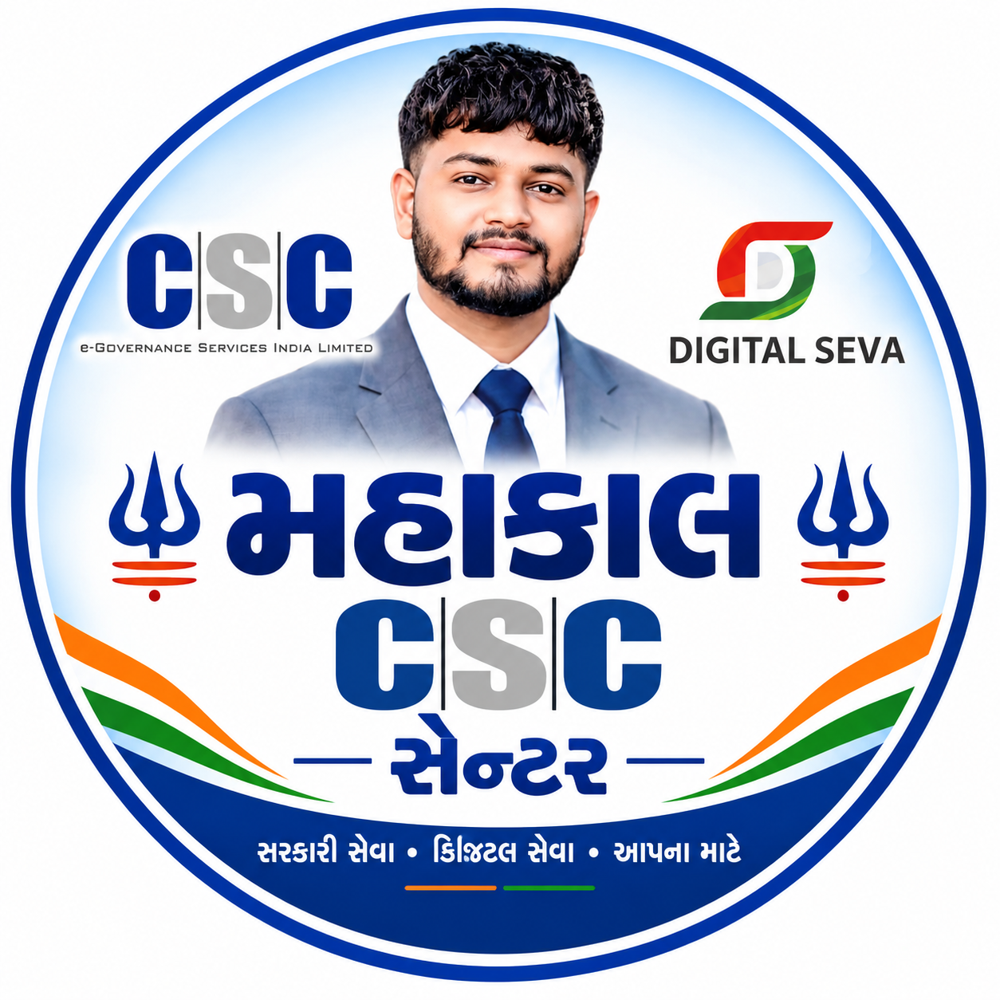

આધાર અને ઓળખપત્ર
ઓળખપત્ર સંબંધિત ઉપલબ્ધ ઓનલાઈન સહાય અને માર્ગદર્શન.

સરકારી સેવા • ડિજિટલ સેવા • આપના માટે
નરસિંહપુરા, તા. પાદરા, જી. વડોદરા
📞 9909614382સરકારી યોજનાઓ, ઓનલાઈન ફોર્મ અને ડિજિટલ સેવાઓ માટે મહાકાલ CSC સેન્ટરની મુલાકાત લો.
અમારી સેવાઓ
તમને જરૂરી સેવા માટે ફોન કરીને માહિતી મેળવી શકો છો.
ઓળખપત્ર સંબંધિત ઉપલબ્ધ ઓનલાઈન સહાય અને માર્ગદર્શન.
નવું Voter ID, નામ શોધવા અને અરજીની સ્થિતિ અંગે સહાય.
ખેડૂત નોંધણી, e-KYC અને લાભાર્થી સ્થિતિ અંગે માર્ગદર્શન.
યોજનાઓની ઓનલાઈન અરજી અને જરૂરી દસ્તાવેજો અંગે માહિતી.
ઉપલબ્ધ ડિજિટલ નાણાકીય સેવાઓ અંગે પૂછપરછ કરો.
ફોર્મ ભરવા, દસ્તાવેજ અપલોડ અને અરજીની પ્રક્રિયામાં સહાય.
નોંધ: સેવાઓની ઉપલબ્ધતા અને પાત્રતા સંબંધિત નિયમો મુજબ બદલાઈ શકે છે. ચોક્કસ માહિતી માટે સેન્ટરનો સંપર્ક કરો.
સંપર્ક કરો
📍 નરસિંહપુરા, તા. પાદરા, જી. વડોદરા
🕘 દરરોજ: સવારે 9:00 થી સાંજે 7:00
આ નિયંત્રણ આ બ્રાઉઝરમાં જ સ્થિતિ સાચવે છે. દરેક મુલાકાતીને એકસરખી સ્થિતિ બતાવવા માટે સર્વર અથવા Firebase જેવી ડેટાબેઝ સેવા જરૂરી છે.
ડેમો PIN: 1234 — જાહેર વેબસાઇટમાં JavaScript PIN સુરક્ષિત નથી. વાસ્તવિક સુરક્ષા માટે સર્વર આધારિત લૉગિન વાપરો.